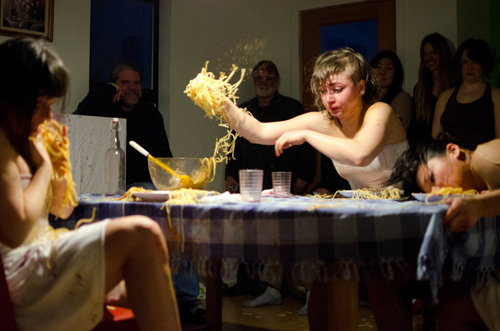
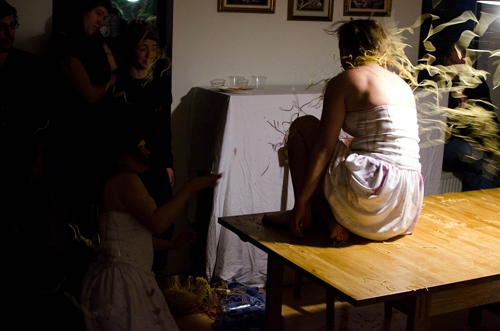
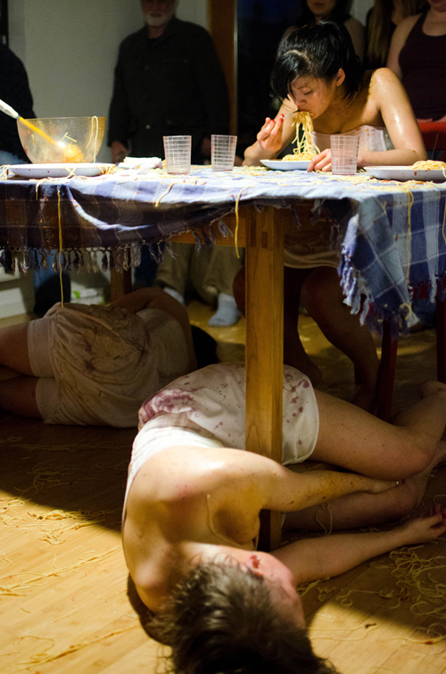
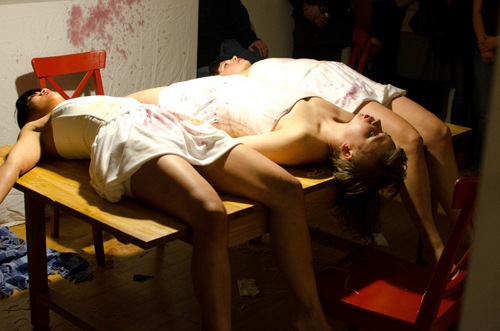
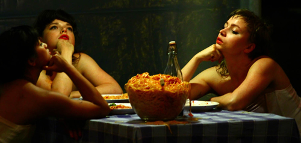

Spaghetti CO. - Nepo is our part time home
A performance by Alice Gosti, Devin McDermott and Anh Nguyen
March 17th, 2012




Photos by Dan Bennett
Rewiev of "Spaghetti CO. - Nepo is our part time home" on Seattle Dances:
Spaghetti Co. Saga Continues at the NEPO House
--------------------------------------------------------------------------------
March 17th, 2012
NEPO Little Treats performance:
Spaghetti CO. - Nepo is our part time home

Spaghetti Co. is a live performance saga by choreographer Alice Gosti in collaboration with Devin McDermott and Anh Nguyen.
This project seeks to investigate the relationship that individuals and families have with food, and the memories that are attached to certain tastes and smells, for example the capability that food has to make one feel at home or very far from home. Alice Gosti was born and raised in Italy, thus a dish of tomato sauce spaghetti has always made her feel at home. The concept of home and a sense of belonging are central to this piece. Each episode starts with three women, wine and a huge bowl of tomato-sauce spaghetti. While the feast unwinds and the dance begins, the audience becomes testimony of a common ritual that is broken down into the signified and the signifier. A plate of spaghetti is followed by another plate of spaghetti, the performers dive into their memories and stories, fall away from the table and come back to it.
Warning: Possibility of flying tomato sauce and spaghetti. Therefore, make sure to wear clothes that you are ok with getting dirty.
Door open at 6:00pm for Spaghetti and Tomato sauce cooking.
Performance at 7:30
--------------------------------------------------------------------------------
NEPO Little Treats is a series of exhibitions, performances and screenings at NEPO House. Our goal is to provide a platform for local artists to show new work and an opportunity for the audience to experience artwork in an intimate setting of a home. Ultimately Little Treats is about hospitality, our encounters with art and with each other. In order to avoid moving too much furniture the shows take place only and entirely in our entry room.